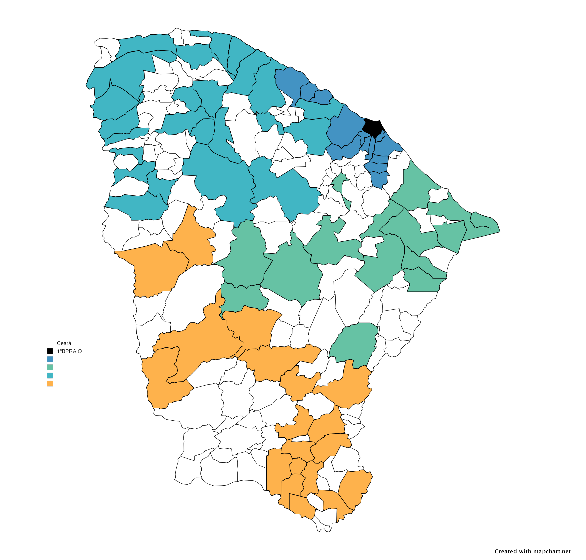

Apresentação
Esta é a versão para impressão da trilha educativa RAIO nas Escolas, voltada a adolescentes, com foco em cidadania, prevenção, segurança digital, respeito à abordagem policial e orientação sobre ingresso na Polícia Militar do Ceará.
O que é o RAIO
O RAIO integra a PMCE como atuação especializada em policiamento ostensivo com motocicletas, com mobilidade, presença, resposta rápida, formação específica e serviço voltado à sociedade.
Mobilidade
Deslocamento ágil em diferentes áreas.
Presença
Visibilidade e prevenção no território.
Resposta
Agilidade no atendimento de ocorrências.
Mapa e Presença Territorial

O projeto contempla municípios com presença do RAIO no Ceará. Na versão digital interativa, o mapa pode ser conectado a camadas, polígonos e busca por município.
- Busca por município atendido.
- Visualização de coordenadas e efetivo.
- Base para evolução com dados territoriais.
Policial do RAIO e EPIs

Mensagem para os jovens: por trás da farda, existe estudo, disciplina, responsabilidade e compromisso com a proteção da sociedade.
- Capacete: proteção no deslocamento com motocicleta.
- Coletes e proteções: reforçam a segurança no serviço.
- Luvas e botas: contribuem para firmeza e controle.
- Uniforme e identificação: fortalecem padronização e reconhecimento institucional.
Em destaque: sim, temos mulheres no RAIO.
Segurança para Jovens
Abordagem policial segura
- Mantenha a calma.
- Deixe as mãos visíveis.
- Avise antes de pegar qualquer objeto.
- Responda com respeito.
Vida digital responsável
- Não compartilhe imagens íntimas.
- Não participe de ataques virtuais.
- Não clique em links suspeitos.
- Guarde provas e peça ajuda se for vítima.
Carreira e Canais Oficiais
Ingresso na PMCE
O caminho regular é por concurso público, conforme edital vigente.
- Concluir o ensino médio.
- Acompanhar editais oficiais.
- Realizar as etapas do concurso.
- Ingressar na corporação e buscar capacitação.
@policiamilitardoceara
@cpraiopmce